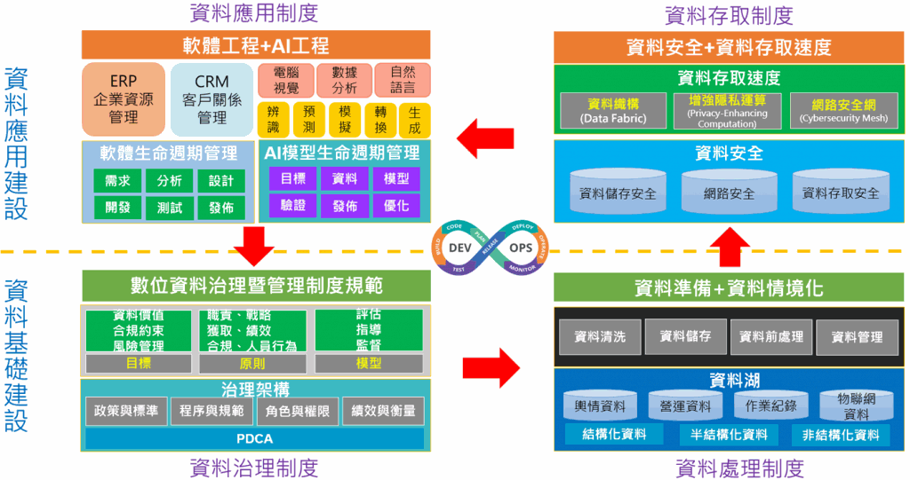

近年機器學習與深度學習模型發展成熟，AI技術與模型建立的環節中，資料佔據著重要的一環，從資料蒐集、儲存、存取、應用都是建構AI智慧應用的重要基礎，為確保企業能夠持續發展與維護各種豐富的AI智慧應用，需要建構資料治理(Data Governance)的相關制度。依據資料治理研究院 (The Data Governance Institute)對資料治理的定義是「資訊相關流程的決策權利與責任系統，依大家同意的模型執行，這個模型描述在遇到何種情況下，透過何種方法，對哪些資訊採取何種行動。」
資料治理是指對資料的取得、處理、品質、運用的一套管理方法，這包含著策略、角色與權限，其目的是要讓資料在組織內發揮最大價值, 讓企業獲取最高效益。
數據的完整蒐集與避免資料偏差一樣重要
現在資料蒐集觀念與過往不一樣，過往企業蒐集的資料大都以結構化資料為主，先定義蒐集資料的結構與內涵，然後存入資料庫(Database)或資料倉儲(Data Warehouse)中，累積大量資料，在需要時取出使用。現在資料處理AI來助攻，除具備處理大量資料的能力外，對於非結構化資料的處理能力也大增，非結構化資料的處理與挖掘也成為企業競爭力的重要來源。企業將內部或外部的各種結構化、非結構化資料建立資料湖(Data Lake)來儲存，資料湖的建立觀念是先將各種原始資料儲存起來，需要時可以從中取出應用，這樣可以讓資料更勝過往地被應用。
企業資料從蒐集、清洗、儲存、處理、存取、應用是企業的重要任務，資料蒐集越廣、越完整、越需要有一套不同於過往的做法，這正是企業需要建立資料治理的制度與觀念。
資料品質也是很重要的一環，資料蒐集應避免偏差或缺失，在整理資料時，就應盡量確保不會造成不公平或嚴重偏差，避免建立的模型即便在測試上有很高的準確率，實務上卻無法使用的困境。例如蒐集多種類的訓練資料，每個種類的數量比例差距很大，就會有資料數量不平衡(Imbalance)的問題，這就會造成分類上的偏差；或是影像資料其拍攝的方式或拍攝儀器和實際場域上使用的不同，也會造成辨識上的偏差；更別提，如果一開始在進行資料標註程序時，就有標註錯誤的情形，那訓練出來的模型，更無法給予令人信服的結果。相較於過往的資訊系統，在AI智慧應用系統中更需要注意這些細節。
過往自動化的資訊系統實現的方法是靠邏輯與規則，因此每個由系統計算出的結果，都可以透過邏輯判斷與驗算回推找出錯誤的原因，反之在AI智慧應用系統中，AI模型的運作，我們較難清楚知道模型判斷結果的依據或理由，為避免資料的偏差會造成不公平甚至影響倫理問題，需建構可信任AI的系統或是產品，因此我們需要針對資料和數據進行管理與規範。
二建設四制度，建構企業數位資料治理藍圖
資料治理觀念漸漸被企業重視，但是怎樣建構一套適合企業的資料治理制度與方法也就成為企業的命題。企業數位資料治理藍圖提出一套建構資料治理的方法，透過二建設四制度來涵蓋整套制度，為企業提供一套資料治理制度建立的步驟方法。
- 資料基礎建設
不同企業對於資料的管理制度及規範，會依數據的著重點不同，建立不同重心及不同嚴謹度的資料治理制度，如對於敏感資料的管理、重要資料的規範、一般資料的處理，有不同力度管理方式；而建立資料治理制度後，依照制度進行資料的蒐集、儲存及初步處理，以能支持未來的應用需求，透過資料處理制度來建立資料湖及資料的初步整理。
- 資料應用建設
資料是提供應用的主要要素，重點是需要能夠被各種應用有效率地存取與使用，資料存取制度建立資料安全、網路安全、存取安全及能被快速存取；資料應用制度來發展企業需要的各式資訊自動化系統及智慧化系統。

圖：企業數位資料治理藍圖
企業數位資料治理藍圖的四制度
整個企業數位資料治理藍圖可以從資料治理、資料處理、資料存取、資料應用四大制度來建構。每個制度都從企業應用發展的需求來調整，運用DevOps觀念來運作，整個藍圖中的四大制度又形成一個更完整的DevOps循環，如此構成一個持續改善的循環，不斷演進發展。
DevOps於2009年被提出後，成為業界開發(Development, Dev)與維運(Operation，Ops)整合的新思維，本藍圖也借用這精神，在制度的發展過程也考慮實務應用的回饋，而適時地調整制度，成為一種不斷自我優化的流程改善循環。接下來說明這四大制度的內涵：
- 資料治理制度
建立資料的基礎建設，首先就需要資料治理上的規範與方法，就是要建立數位資料治理制度，將其成為企業資料治理的依據。這裡也要強調一下資料治理與資料管理的範疇不一樣，資料管理談的是資料的管理方法實施，來達成管理目的；
資料治理有更高的管理層級，制定各種策略，指導資料管理的活動，資料的蒐集、處理、應用、品質相關的規範與方法及作業的角色與權限，這些策略指導、監督、評估資料管理的進行。
如:何人、何時、可以做何事的規範；資料品質的確保條件…等。
制度的建立運用PDCA ( Plan-Do- Check-Act )精神做管理循環。先是依照企業營運目標來建立適合制度，然後執行，在實際場域進行績效評估，針對不足之處持續改善。企業建立過程可以參考現有的資料治理制度，例如2021年7月資策會科技法律研究所出版「重要數位資料治理暨管理制度規範」(EDGS, Essential Data Governance and Management System)，提供作資料治理時需要的五個階段，包含需求蒐集、目標訂定、目標執行、目標達成以及持續改善，是一個很完整的制度導入參考規範；國際標準組織2015年也提出ISO 38505-1提出資料治理的目標、原則與模型；也有研究者提出資料治理架構，這些都是企業可以參考。
- 資料處理制度
資料處理制度可以從兩個角度來規劃與執行，就是「資料準備」和「資料情境化」。資料準備指的就是建立企業的資料湖，資料湖廣泛收集企業營運所需的內部資料及外部資料，可以保留原始資料，也可能保存尚未明確運用的資料。內部資料如交易資料、服務資料、作業紀錄、物聯網資料、互動資料…等。外部資料如輿情資料、環境資料、客戶或消費者網路行為資料、顧客社群媒體溝通資料…等。這些資料可能是有格式的結構化資料、或沒有格式的非結構化資料、或也可能是部分有結構混和部分無結構的資料。
資料情境化指的是建構資料的使用情境，一般資料湖的收集的資料不一定要有特定目的，但公司經營有其目標，所以提出資料情境化概念，將有些的資料可以依據營運目標預先設定可能被使用的情境，來預先梳理資料，建立中介資料(Meta Data)並整理資料間之關係，這可以於資料蒐集時就加以預先處理，以供未來使用。例如建立推薦系統模型時，會需要建構客戶喜好度資訊，那我們就可以來思考，現在已經蒐集到或是未來系統應用上可以取得的資料有哪些跟喜好度有關，這其中又可以串接那些資料來連結喜好度，這就是建立資料的使用情境。資料情境化便是對資料做基礎處理依據，包含進行資料清洗、資料儲存、資料前處理、中介資料、資料管理，以完成資料準備，更有利於未來企業之使用。
- 資料存取制度
在資料存取制度的主要兩個核心是「資料安全」及「資料存取速度」。企業將資料收集並整理過後，透過儲存安全、網路安全、存取安全的制度與作業來確保資料安全，而資料之目的是位能夠被各式企業應用所使用，資料能夠於使用的各種情境快速且安全被存取，也成為制度設計之重要因素，這可以透過Gartner提出的資料編織(Data Fabric)、增強隱私運算及網路安全網來建構，達到資料能安全地被管理與快速地被應用，以發揮資料價值。
- 資料應用制度
資料要能被實際運用才能產生效果，而資料運用被展現成各種企業應用，為企業或組織所運用。資料應用制度主要是企業應用的開發管理制度，包含「軟體工程」及「人工智慧工程」。
軟體工程已發展多年，企業在開發軟體產品或服務時使用「軟體生命週期管理」來實現企業面向內部的企業資源規劃( ERP, Enterprise Resource Planning )及面向外部的顧客關係管理( CRM, Customer Relationship Management )系統。
人工智慧工程近兩年開始被重視，因為企業具有越來越多的各式AI智慧應用與服務，為讓AI更能落地與接軌，透過AI工程的「AI模型生命週期管理」來協助企業更容易管理與運用AI智慧應用，也能保有持續發展之能力。
整個企業數位資料治理藍圖，是藉由DevOps的概念貫穿。透過實際資料運用的經驗，可以發掘管理的不足之處，再進行制度上的調整，調整資料治理規範，修改資料處理的方式，加強資料存取的安全，最後再回到實際的應用跟開發，透過不斷的循環，持續改善以達到企業營運的目標。
數位經濟時代，數據是企業驅動成長的重要動力，企業數位資料治理藍圖是企業數據能夠發揮最大價值的藍圖，企業依據經營目標來建構治理制度，成為企業不斷成長的驅動力量。
在數位時代上閱讀 了解更多Ai3人工智能服務 即時掌握更多資訊新知